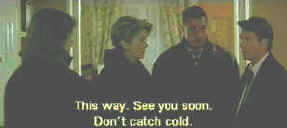

|
My Favorite Season/B+,C+ |
|
Fox Lorber/1996/122m |
Andre Techine's fascination with family continues in My Favorite Season, as the
director examines the relationship of a brother and sister under pressure from many directions. The
necessity of placing their mother in a nursing home brings matters to a head and Emilie's family is
stretched to the breaking point with her brother Antoine as a prime catalyst. Typically Techine's
characters are searching for their way through the complexities of life. One of the remarkable
aspects of this film is how casual yet maturely the subject matter is treated. While there are
emotional explosions to highlight the story, this is a story about people.
Both Catherine Deneuve and Daniel Auteuil are on familiar ground in
bringing Techine's characters to life. The mature Deneuve is still beautiful and her range as an
actress seems to keep expanding. Auteuil, ever the provocateur on screen is a great match to
Deneuve. The surrounding characters are all terrific as well.
 |
|
Antoine the catalyst.©Fox Lorber |
The widescreen 1.85 transfer lacks luster, partly due to the low key shooting style of Techine for
this film. Contrast ratio lacks power and the overall transfer could have been brighter. Some
scenes have a slightly fuzzy appearance. The Dolby 2 channel stereo is fine.
|
|
|

Selections from the feature archive include articles on Akira Kurosawa,
Frank Darabont, Blonde Bimbos, Hollywood
Street Gangs, or Vietnam:
The Hollywood Pariah, and many more....
Catch the Hollywood take on Blonde Bimbos by clicking on the
image above.
 
You won’t want to miss the online iF Magazine. You may have guessed iF stands for
independent film.

Fine reviews, features and news on DVD. The Big Picture
has been doing DVD as long as anyone. Jeff McNeal and Bob Banka feed on a steady diet of DVDs.
|